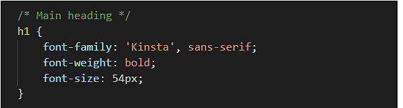
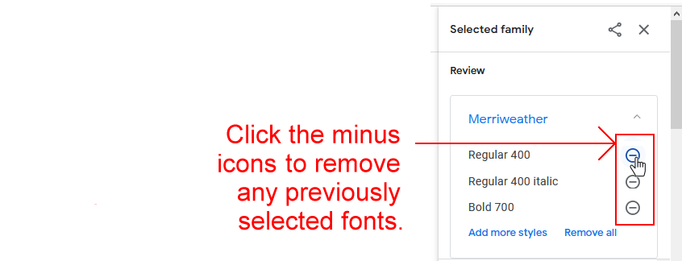
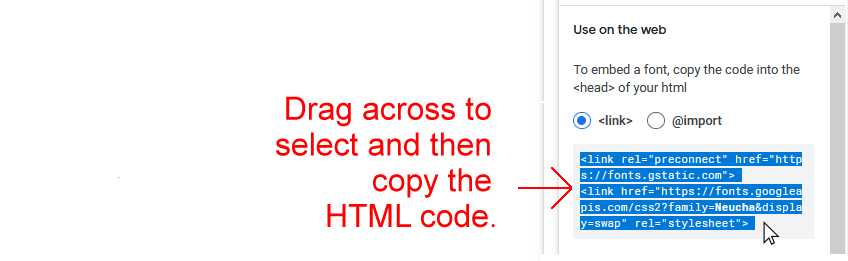
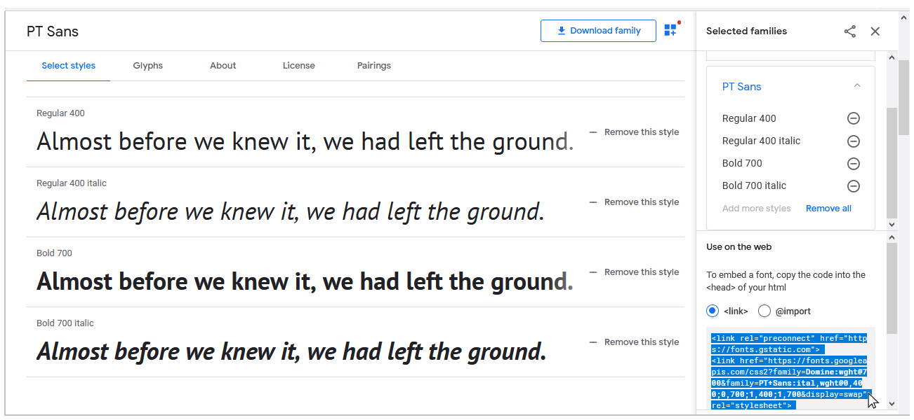
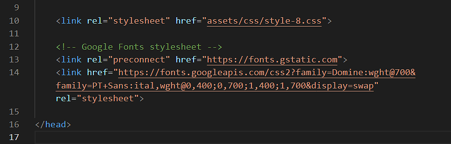
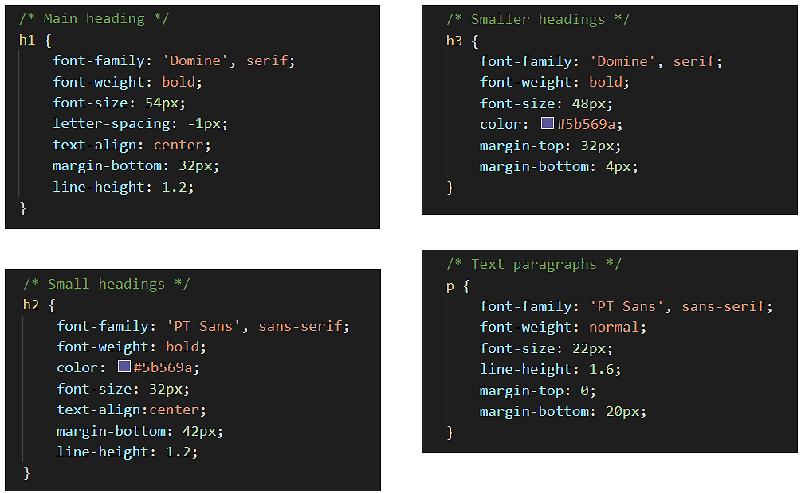

Learning Goals
At the end of this Tutorial, you will be able to:
- Select font-weight/style combinations for selected font-families (typefaces) from the Google Fonts website.
- Add selected Google Fonts CSS links to the <head> of a web page.
- Add selected Google Fonts names to the CSS font-family property in a stylesheet file.
The finished versions of the four sample web pages you will update with Google Fonts in this Tutorial should look as shown below.


You created these sample web pages and their linked stylesheets in the previous Working with Images Tutorial.
About Google Fonts
Google Fonts offers the Internet’s largest collection of open-source, royalty-free fonts. All 900-plus fonts can be used without restriction for personal, not-for-profit or commercial web projects.
Below is a screenshot of the Google Fonts home page at:

To preview a particular font, click on it. To see how a few words of text will look when styled in the selected font, type your chosen text in the Type here to preview text box.

Google Fonts: the three steps
There are three basic steps to using Google Fonts. THey are as follows.
- Select your font: From the Google Fonts website you choose the weight(s) and style(s) of the font-family you want to use.
- Copy-and-paste: You copy the HTML code generated by the Google Fonts website into the <head> of every page on which you want to use you chosen font(s).
 In the example above, the name of the font is ‘Merriweather’.
In the example above, the name of the font is ‘Merriweather’. - Update your CSS file: Edit the font-family styles rules in your CSS file with the names of your chosen fonts.
For example, to use the ‘Kinsta’ font for your <h1> headings, you would edit the h1 selector in your CSS file as follows.

To use the ‘PT Sans’ font for your <h3> headings, you would edit the h3 selector in your CSS file as follows.
 And if you wanted to use the ‘Work Sans’ font for your text paragraphs, you would edit the p selector in your CSS file as follows.
And if you wanted to use the ‘Work Sans’ font for your text paragraphs, you would edit the p selector in your CSS file as follows.
 Note that the font name is always wrapped in a pair of single quotation marks (‘ ’).
You can also see that every Google Font name is followed by a comma (,) and what is called a fallback font – either serif or sans-serif. This is the font that is displayed when the web page is viewed without a live Internet connection.
Note that the font name is always wrapped in a pair of single quotation marks (‘ ’).
You can also see that every Google Font name is followed by a comma (,) and what is called a fallback font – either serif or sans-serif. This is the font that is displayed when the web page is viewed without a live Internet connection.
Popular fonts in 2022
As with much else, there are fashions and trends in fonts. Here are the more widely-used serif and sans-serif fonts at the moment.

Working with the van Gogh web page
In this section, you will work with the sample page-5.html web page and its linked style-5.css stylesheet.
Obtaining the Google Fonts code
Your first task is to go to the Google Fonts website, select the weight/styles of your required font-family, and then to copy the related HTML code.
- In your web browser, go to the Google Fonts website at the address below: https://fonts.google.com
- In the Search box at the top-left of the screen, type the font-family (typeface) name of Merriweather.
 Next, in the search results displayed in the lower half of the screen, click on Merriweather.
Next, in the search results displayed in the lower half of the screen, click on Merriweather. - You are now shown a list of the styles and weights available for your selected font-family. For Merriweather, there are eight in total.
- Using the Select this style buttons at the right of the screen, select the following three font weight/style options:
Regular 400
Regular 400 Italic
Bold 700
- At the lower-right of the screen, as you select each font weight/style, you can see that Google Fonts is creating the relevant HTML code.
 After selecting the three font weights/styles, move your mouse to the box in the lower-right corner, drag across the HTML code to select it, and then copy the HTML code.
After selecting the three font weights/styles, move your mouse to the box in the lower-right corner, drag across the HTML code to select it, and then copy the HTML code. - You can now close the Google Fonts tab in your web browser.
Updating your web page with the font link
Next, you will paste the HTML code you copied from Google Fonts into your web page.
- In VS Code, open the page-5.html web page.
- In the <head> of the web page, paste the copied HTML code just before the closing </head> tag.
Optionally, add the following comment line just above the pasted Google Fonts code.
<!-- Google Fonts stylesheet -->Your web page <head> should now look similar to that below.
- Save your page-5.html web page.
When you view the page-5.html page in a web browser, you can see nothing has changed. For your selected Google Font to display, you also need to update the web page's linked stylesheet file.
Updating your stylesheet with the font name
Your final task is to update the linked stylesheet with the name of the Google Font you want to use in your web page. Here are the steps.
- In VS Code, open the following stylesheet file: style-5.css
- In the stylesheet, you can see that, for all four CSS selectors (h1, h2, h3 and p), the font-family property has the same value of serif.
Within each of the four selectors, delete the font-family style rule (property and value pair).

- Save your style-5.css file and view the page-5.html page in your web browser. You can see that the web page looks exactly as before. That is because serif is the default font-family set by all web browsers. You never actually need to set this font in a stylesheet.
- For this web page, you will use only a single font-family for all the text: headings, sub-headings and paragraphs.
In VS Code, near the top of your stylesheet, update the body selector as shown below.
 The order in which you type the two style rules does not matter.
The order in which you type the two style rules does not matter. - When finished, save your style-5.css file, and view the page-5.css web page in your browser.
- As you can see, for the same CSS font-size value, the Merriweather font is displayed at a slightly larger size than the default serif font.
In the style-5.css file:
- For the h2 selector, decrease the CSS font-size property to 24px.
- For the p selector, decrease the CSS font-size property to 20px.
- When finished, save your style-5.css file, and view the page-5.css web page in your browser.
Task completed. You can now close the page-5.html and style-5.css files in VS Code.
Working with the Smoothies web page
In this section, you will work with the sample page-7.html web page and the sample style-7.css stylesheet.
- In your web browser, go to the Google Fonts website at the address below: https://fonts.google.com
- In the Search box at the top-left of the screen, type the font-family (typeface) name of Neucha and then click this font-family in the search results.
- As with many decorative fonts, Neucha has only a single style/weight.

- At the right of the screen, you may see that Google Fonts has ‘remembered’ your previous font choices. If so, click the minus icon beside each font to de-selected it. Alternatively, click Remove all. 
- Next, use the Select this style button to select the one style/weight of the Neucha font.
- When finished, at the box at the lower-right of the screen, drag across the HTML code and then copy it.  You can now close the Google Fonts tab in your web browser.
- In VS Code, open the following two files:
page-7.html
style-7.css - In the <head> of the web page, paste the following lines just before the closing </head> tag.
 Optionally, type a comment line above the pasted Google Fonts link.
You can now close the page-7.html file in VS Code.
Optionally, type a comment line above the pasted Google Fonts link.
You can now close the page-7.html file in VS Code. - In VS Code, display your style-7.css stylesheet.
- Within each of the four selectors (h1, h2, h3 and p), delete the following font-family style rule (property and value pair).

- For this web page, you will use only a single font-family for all the text: headings, sub-headings and paragraphs.
In VS Code, near the top of your stylesheet, update the body selector as shown below.

- When finished, save the style-7.css file, and view the page-7.html web page in your browser.
Working with the Tourism web page
In this section, you will work with the sample page-6.html web page and the sample style-6.css stylesheet. You will add two fonts: Oswald (for headings and sub-headings) and Lato (for text paragraphs).
- In your web browser, go to the Google Fonts website at the address below: https://fonts.google.com
- In the Search box at the top-left of the screen, type the font-family (typeface) name of Oswald and then click this font-family in the search results. This is a condensed (‘narrow’) font-family suitable for headings. For paragraphs of text, however, it can be difficult to read.
- At the right of the screen, click Remove all to de-select any previous font choices.
- Next, scroll down the Google Fonts screen and use the Select this style button to select the Bold 700 style/weight of the Oswald font.
 You have now selected the first of the two fonts you require.
You have now selected the first of the two fonts you require.

- Scroll back up to the top of the Google Fonts screen and click the Browse fonts option.

- In the Search box at the top-left of the screen, type the font-family name of Lato and then click this font-family in the search results.
- Next, scroll down the Google Fonts screen and use the Select this style button to select the following four styles/weights for this font-family:
Regular 400
Regular 400 italic
Bold 700
Bold 700 italic - When finished, at the box at the lower-right of the screen, drag across the HTML code and then copy it.
 You can now close the Google Fonts tab in your web browser.
You can now close the Google Fonts tab in your web browser. - In VS Code, open the following two files:
page-6.html
style-6.css - In the <head> of the web page, paste the following lines just before the closing </head> tag.
 Optionally, type a comment line above the pasted Google Fonts link.
You can now close the page-6.html file in VS Code.
Optionally, type a comment line above the pasted Google Fonts link.
You can now close the page-6.html file in VS Code. - In VS Code, display your style-7.css stylesheet.
- Within each of the three selectors (h1, h2, and p), update the font-family style rules as follows:
 As shown above, add a letter-spacing style rule to the h2 selector.
As shown above, add a letter-spacing style rule to the h2 selector. - When finished, save the style-6.css file, and view the page-6.html web page in your browser.
Working with the Software web page
In this section, you will work with the sample page-8.html web page and the sample style-8.css stylesheet. You will add two fonts: Domine and PT Sans.
- In your web browser, go to the Google Fonts website at the address below: https://fonts.google.com
- In the Search box at the top-left of the screen, type the font-family name of Domine and then click this font-family in the search results. As you can see, there is no italic style available for this font-family.
- At the right of the screen, click Remove all to de-select any previous font choices.
- Next, scroll down the Google Fonts screen and use the Select this style button to select the Bold 700 weight of the Domine font.
 You have now selected the first of the two fonts you require.
You have now selected the first of the two fonts you require.

- Scroll back up to the top of the Google Fonts screen and click the Browse fonts option.

- In the Search box at the top-left of the screen, type the font-family name of PT Sans and then click this font-family in the search results.
- Next, scroll down the Google Fonts screen and use the Select this style button to select all four styles/weights for this font-family:
Regular 400
Regular 400 italic
Bold 700
Bold 700 italic - When finished, at the box at the lower-right of the screen, drag across the HTML code and then copy it.  You can now close the Google Fonts tab in your web browser.
- In VS Code, open the following two files:
page-8.html
style-8.css - In the <head> of the web page, paste the following lines just before the closing </head> tag.  Optionally, type a comment line above the pasted Google Fonts link. You can now close the page-8.html file in VS Code.
- In VS Code, display your style-8.css stylesheet.
- Within each of the four selectors (h1, h2, h3, and p), update the font-family style rules as follows: 
- When finished, save the style-8.css file, and view the page-8.html web page in your browser.
Uploading your files to GitHub
After finishing your web pages and stylesheets, you are now ready to upload them to your account on GitHub.
- Open a new tab in your web browser and go to GitHub.com. If you are not already signed in to your GitHub account, sign in now.

- On your GitHub home page, click the ‘repo’ that holds your web pages. Its name will look as follows, where username is your chosen username on GitHub.
username.github.io

- On the next GitHub screen displayed, near the right of the screen, you can see a button named Add file. Click on it.

- From the dropdown list displayed, choose the option Upload files.

- In File Explorer (Windows 10) or Finder (Apple Mac), drag-and-drop your index.html file and your 📁 assets and 📁 exercises sub-folders to upload them to your repository on GitHub.

- Scroll down to the bottom of the GitHub screen, and accept or edit the short message (Add files via upload) in the Commit changes box.
- Finally, click the green Commit changes button to upload your files.

Your updated home page and four sample pages are now published on GitHub at web addresses similar to the following:
https://username.github.io/index.html
https://username.github.io/exercises/page-5.html
https://username.github.io/exercises/page-6.html
https://username.github.io/exercises/page-7.html
https://username.github.io/exercises/page-8.html
It may take a few minutes for your uploaded files to appear on GitHub.